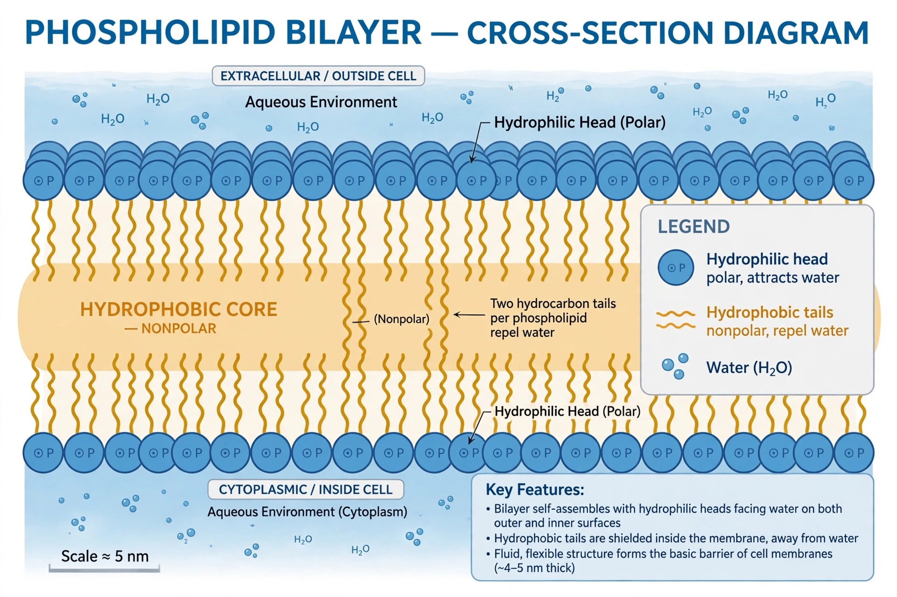

From Wikipedia, the free encyclopedia
 | |
| Thickness | c. 5 nm |
|---|---|
| Main components | Phospholipids, cholesterol, glycolipids, membrane proteins |
| Found in | Cell membranes of all known life |
The lipid bilayer (or phospholipid bilayer) is a thin polar membrane made of two layers of lipid molecules. These membranes are flat sheets that form a continuous barrier around all cells. The cell membranes of almost all organisms and many viruses are made of a lipid bilayer, as are the nuclear membrane and membranes surrounding cell organelles.
Each phospholipid has a hydrophilic ("water-loving") head and two hydrophobic ("water-fearing") fatty acid tails. In aqueous solution the molecules spontaneously arrange so the heads face the water on both sides while the tails point inward, forming a sheet about five nanometres thick. Proteins are embedded in or attached to the bilayer, and cholesterol modulates its fluidity in animal cells.
The bilayer is selectively permeable: small non-polar molecules such as oxygen and carbon dioxide diffuse across freely, while ions and large polar molecules require transport proteins. The fluid mosaic model (Singer and Nicolson, 1972) describes the membrane as a two-dimensional liquid in which lipids and proteins diffuse laterally. The bilayer also self-seals when torn, underlies cell signalling, vesicle formation, and energy transduction, and gives rise to membrane potential.